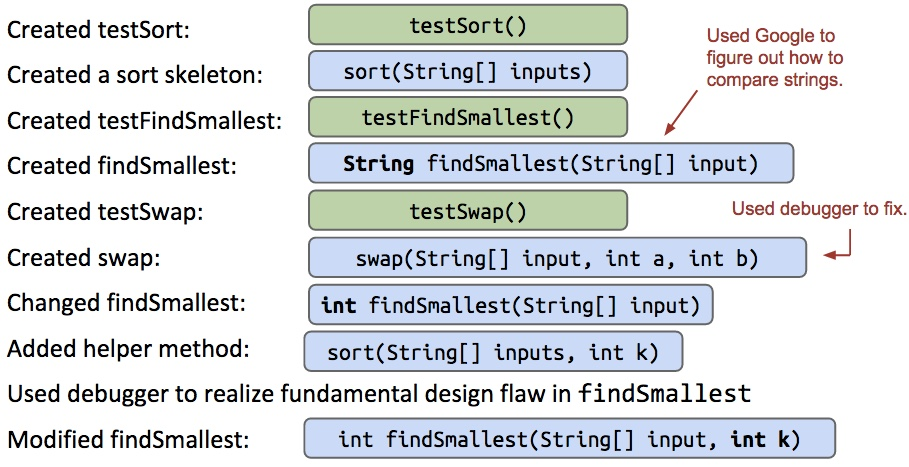

Testing
- Suppose we want to write a class
Sort, that sorts and prints a set of command line arguments - Instead of relying on some autograder to determine if our solution is valid, we can write our own tests.
- New way: write testing class
TestSort with a testSort method first
- testSort will call our sorting class and use JUnit library to test the sorting function. In our main, we will call the testSort class:
public class TestSort {
public static testSort() {
String[] input = {"cows", "dwell", "above", "clouds"};
String[] expected = {"above", "cows", "clouds", "dwell"};
Sort.sort(input);
org.junit.Assert.assertArrayEquals(expected, input);
}
public static void main(String[] args) {
testSort();
}
}
- We want to write tests for every "unit" of our code, to decrease debugging time, clarify components of program, etc... (drawback: increased time spent programming, may give false confidence)
- Good approach: Test Driven Development:
- Write tests before writing the code, then write code to meet these tests. Tests should initially fail, and then after writing proper code the tests pass
- This clarifies the task and is good practice
- Drawback: delays actually creating the code, sometimes it's too early to define tasks via test cases
- Better than the typical naive approach (reading specs for program, coding entire program, then checking and debuging the errors via print statements etc...) because this workflow is slow and unsafe
- TDD is very far from the naive workflow we usually do, best approach probably something in middle: integration testing
- Tests cover several units at once
- Can ensure multiple units work properly together at a higher level of system
- Drawbacks: testing at higher level of abstraction can miss lower level errors
Example: Designing Selection Sort
- Sort a list of n items by finding the smallest item, moving it to the front, and then doing selection sort on the remaining n-1 items without touching the front item
- Design workflow evolution:

Summary:
- Often, development is an incremental process involving lots of task switching and on the fly design modification.
- Unit tests provide stability
- Provides confidence in basic units of code, helps for debugging
- Allows for focus on one task/unit at a time
- Allow for safer refactoring of code
JUnit Tricks:
Instead of using:
org.junit.Assert.assertEquals(expected, actual);
We can instead use annotations:
- Annotate each test with
@org.junit.Test - Change all test methods to non-static
- Use a JUnit runner to run all tests and tabulate results
- IntelliJ provides a default runner/renderer. OK to delete main.
- Rendered output is easier to read, no need to manually invoke tests
Also, by doing:
import org.junit.Test;
import static org.junit.Assert.*;
We will no longer need to type org.junit or org.junit.Assert parts of JUnit testing commands (ex: @Test).